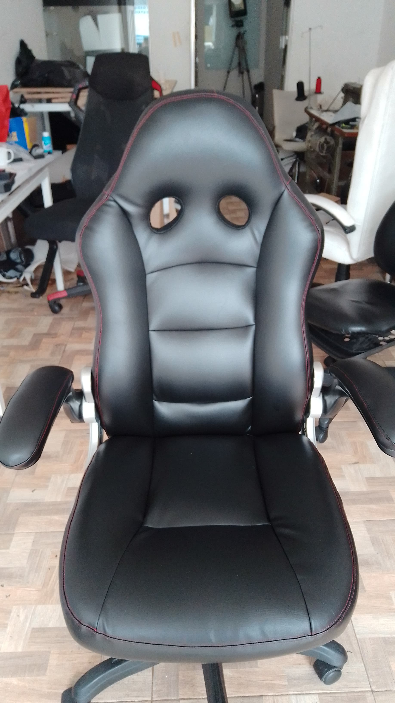
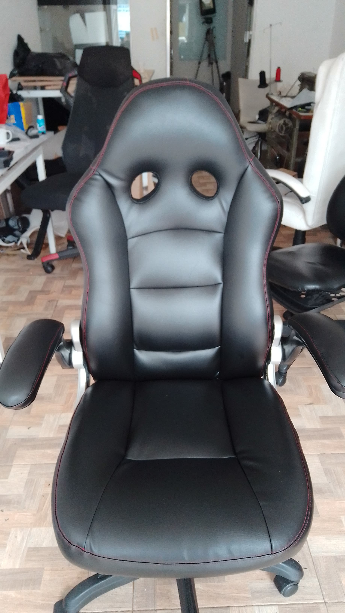

La magia del detalle
Muchos clientes llegan con muebles que parecen imposibles de recuperar. Pero para nosotros, cada mueble tiene historia y merece una segunda vida.


Sofá restaurado con tela premium y espuma de alta densidad.
 

Silla gamer transformada con tela asia profesional.
¿Por qué elegirnos?
- Entregas a tiempo garantizadas
- Materiales resistentes y duraderos
- Acabados profesionales
- Más de 10 años de experiencia